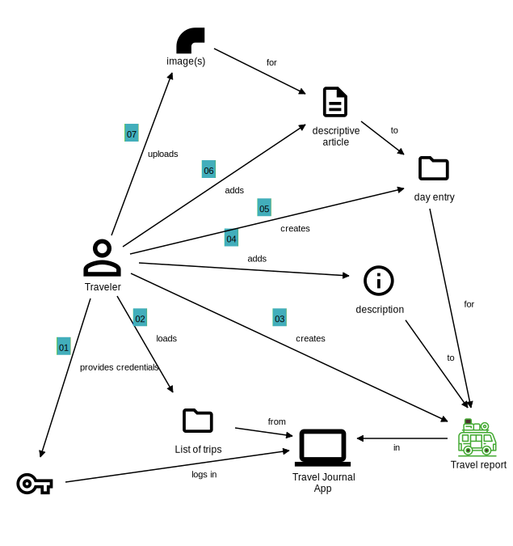

Domain Storytelling
So I want an app! But where do I start?
One of the really helpful things we as humans do is tell stories. You see this in Native American culture in the US, with life’s lessons conveyed to kids by telling stories (such as the Miwok story I was told about a decade ago about two young bears rescued by a lowly worm from the top of El Capitan mountain — not by stronger, faster or bigger animals).
Since stories are so powerful, they can also be used to clarify how an online application should operate, because you can invite different stake holders together to develop stories — Not allegories about worms or stories in the Agile Development context but about how a user of an application would interact — or expect to interact — with it: What needs would the user have at any point? How are different parts logically arranged? How would things fit together? What needs to happen when etc.
Once those stories are created, you already get a pretty good overview of what needs to happen when, how functionality needs to be grouped. During those discussions, interesting details usually surface quite naturally, which is why this is such a fundamental starting point for an application.
Developing the story
Normally, you would invite people knowledgeable about the company’s offerings and its processes to working sessions, but since I’m by myself, I need to adopt a split personality: My UX self needs to interview my client self and see how things would fit together, what features the app should have etc.
So during the “interview phase”, my customer/client self gave my UX self the following summary (summarized and from memory):
I want an app that lets users record their vacation travel. I’m most interested in trips that are several days long and are contiguous — Examples would be bike, hike or canoeing trips, where a person doesn’t jump around from city to city, but explores the sights between them, enjoys nature and the act of getting from A to B as much as the destination each day.
By record I mean two things:
- Create a trace of the path they traveled each day, ideally in the form of a line that gets displayed on a map of some sort.
- Upload pictures that can be displayed in the app, for each day. Pictures should enable the user to add descriptions and ideally place them on the map, so people can relive their experience.
From this abbreviated description, and some further digging I didn’t summarize here, we can develop the following overview of a domain story:

From this overview graphical description we can already get a sense of what the app needs to do:
- We need a login and authentication system of some sort, so that every user can have their own online travel journals.
- After login, a user might see a list of his travel journals, possibly grouped by some criteria — but this needs to be worked out in further sessions about the details.
- From the list of trips, the user can select one to look at, work on or create a new trip in the system.
- After creating a new trip, the user gets to add information such as a description and travel dates to the trip
- Once the overall information for the trip has been entered, the user gets to create entries for every day, which will contain information of different kinds, as detailed in the next to points
- The traveler can enter full text a description, like a blog entry or article for the day and also, as mentioned in the initial statement by the customer, add a map as well as
- add one or more pictures for each day. Where they are placed — in a slideshow or as single images throughout the story or both — remains for the UX phase to determine. Here we simply capture that in the work flow of creating a new trip, the user needs to be able to add images. This could also be the topic for further domain stories to clear up what exactly this image functionality entails.
During the creation of the domain story with the group, there were some comments and ideas that were deemed important, but were shelved to keep the work focused:
- It’s fine that a user can read her own stories, but the sharing of stories with friends would be an expected functionality for an app like this.
- Since we have the users’ images, we could in the future expand the functionality and offer the generation of printed photo albums, complete with maps, images, captions and text.
- If the site takes off, a new part could be created that allows the community and specially selected members to recommend specific trips to the community
- In a similar vein as the previous point, it is possible to imagine a commenting feature, which might also permit the author to limit who can post by certain criteria, which might include length of membership, number of trips posted, personal invitation etc.
- With the ability of users to post pictures, the app will need a section for copyright owners to file claims that pictures were used without permission
- …
Domain Storytelling graphic findings
This example shows the usefulness of the domain storytelling procedure. Through imagining how we as users would work on a problem and compare that to others’ concepts, we can arrive at a well-reasoned representation of the system we’re going to be building and have a good chance of looking at the same problem from different view points if we do the process in a group.
One thing also worth noting is that in this specific example, we appear to have nested functionality: A user can have multiple trips, which each consists of multiple trip days. Each of these days has a separate entry, which very likely will have its own set of images.
The graphic also hints at a specific form of expression for this project — the domain language. I called the user not “User” but “Traveler”, for example. This is an important concept in complex projects: Every participant needs to understand what the words mean and every word needs to mean only one thing to clearly communicate.
As a final point, it is worth noting that the graphic already suggests a clear language by following the arrows from the start to the end. For example, path (7) reads (almost) like a real sentence:
Traveler uploads image(s) for a descriptive article to a day entry for a travel report in the travel journal app
I also want to stress, that having this one overview domain story is important, but not a complete treatment. Each of the steps in this overview has its own domain stories within them. Thinking about the details of image management, for example: In the diagram here, we simply upload images in a “descriptive article”, but that step deserves its own domain story to further clarify what needs to happen, as in this example treatment:
- Traveler edits a day’s entry
- Traveler changes to the image management system
- Traveler uploads an image into the system
- The system uses defaults to resize the image for optimal display on various screen sizes
- After the upload, the traveler is able to connect his story to the image and also specify a caption for the image
- Important questions:
- Does the system allow a user to assign the same image to several different travel days?
- And if so, should the system allow the user to adjust the caption for each story?
The road ahead
In this initial step, we have gotten to know our domain somewhat, have taken a user-centered approach to put ourselves into the user’s shows and gotten an idea about what the application does and does not need to accomplish. We have gotten a first glimpse of the types of data we need to manage and how the data relates to each other. These insights will get fleshed out further in the next steps, which will deal with UX design and the software architecture we want to accomplish our goal of an application that can grow without becoming hard to manage and performs well.